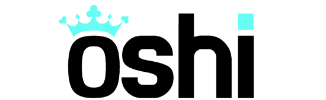

Operator Audit · Updated July 2026

Oshi Casino Review 2026 (Canada)
One of the longest-running crypto-friendly casinos online — live since 2015 — with a huge 14,000+ game library, e-wallet withdrawals in under an hour and a four-deposit welcome package. Here's how Oshi scores against our fixed Safety Index, and exactly what Canadian players get.
Updated July 2026 · Fact-checked by Marc Tremblay
The short version
Oshi Casino review: our verdict at a glance
Oshi is one of the elder statesmen of the crypto-casino world. Live since 2015, it has outlasted countless newer rivals and built a genuinely enormous catalogue of more than 14,000 games from over 100 studios. Operated by Dama N.V. under Tobique and Anjouan licensing, it accepts players across Australia, Canada, New Zealand and the DACH region, and it is one of the few offshore brands with a decade-long track record to point to. For this Oshi Casino review we audited the operator against our fixed Safety Index and awarded it 8.7 out of 10 — among the higher scores we hand out, driven by longevity, library depth and standout payout speed.
The headline strengths are the things experienced players value most. Withdrawals to e-wallets and crypto typically land in under an hour after a short pending review — noticeably faster than the "instant once approved" promise of many rivals — and the monthly withdrawal ceiling of 30,000 EUR is comfortably higher than the 20,000 we see at comparable casinos. The game library is vast, the banking menu is deep and Canada-friendly with Interac support, and the four-deposit welcome package is generous at up to $6,000 CAD plus 450 free spins.
The trade-offs are the usual offshore ones. Oshi's Tobique and Anjouan licences don't carry the consumer-protection weight of a Malta or UK licence, the bonuses run at x40–x45 wagering, and live support is offered in only three languages (English, German and Russian), though the site itself is localised for Canadian English and French. For most recreational Canadian players, none of this offsets what is a fast, deep and well-established casino. The rest of this review digs into each area.
Best for
- + Players who want the fastest possible e-wallet payouts
- + Anyone who wants the widest game selection available
- + Crypto users and Interac depositors
- + Players who value a long, established track record
Less ideal for
- – Players who require a Canadian or MGA/UKGC licence
- – Anyone who needs live support in French
- – Ontario residents (offers not available in AGCO mode)
- – Players who want low, single-digit wagering
Sign-up offers
Oshi Casino welcome package & bonus codes for Canada
The Canadian welcome package runs across your first four deposits — up to $6,000 CAD in matched funds plus 450 free spins. All four carry x40 wagering and a 30 CAD minimum deposit. 19+. Terms apply.
Welcome offer
Four deposits
The full four-deposit package
- 1st deposit
- 100% up to $1,500 + 150 FS · code WELCOME100CA
- 2nd deposit
- 75% up to $1,500 + 100 FS · code SECOND75
- 3rd deposit
- 50% up to $1,500 + 100 FS · code THIRD50
- 4th deposit
- 100% up to $1,500 + 100 FS · code FOURTH100
- Wagering
- x40
- Min. deposit
- 30 CAD
- Bonus duration
- 7 days · free spins delivered in packs of 50 per day
Free spins land on titles such as Fortune Ox (PG Soft), Sugar Rush 1000 & Gates of Olympus 1000 (Pragmatic Play) or Elvis Frog in Vegas (BGaming), depending on your location. Spins must be activated in the promo section of your account.
Oshi's Canadian welcome package is unusually large because it spans four deposits rather than the usual three. The first deposit is a 100% match up to $1,500 with 150 free spins using code WELCOME100CA; the second adds 75% up to $1,500 plus 100 spins (SECOND75); the third is 50% up to $1,500 plus 100 spins (THIRD50); and the fourth returns to a full 100% up to $1,500 with 100 spins (FOURTH100). Stack all four and you're looking at up to $6,000 CAD in matched funds and 450 free spins, with a x40 wagering requirement that is slightly friendlier than the x45 we see on many competitors.
The free spins are delivered as a drip rather than a lump sum, which is worth understanding before you claim. On the first deposit, 50 spins arrive immediately, then you log back in on each of the next two days to activate 50 more — a mechanic designed to bring you back to the site. On the later deposits the spins split across two days instead. Every batch has to be activated in the promo section of your account, spins expire after their activation window, and the whole bonus runs on a 7-day clock, so it pays to claim when you know you'll be playing across the week.
Midweek reload
- Reload 20% up to $150 + 30 free spins — code Reload
- Available once a day on Tuesday, Wednesday and Thursday
- Minimum deposit 30 CAD · wagering x45 · 5-day duration
- Free spins on Deep Sea, Lucky Lady Moon and Spin and Spell
Beyond the welcome
Oshi backs the welcome package with an ongoing schedule of promotions, a VIP program, regular tournaments and loot boxes. Active players can expect reloads, free-spin drops and prize races on a rolling basis — check the promotions hub on-site for what's currently live.
Bonus terms at a glance
The four welcome bonuses wager at x40; the midweek reload is x45. Minimum qualifying deposit is 30 CAD. Free spins arrive in packs of 50 and must be activated in the promo section within their 1-day activation window. Bonuses run for 7 days (5 for the reload). Always read the current terms on-site before opting in — offers and codes can change.
Trust & licensing
Is Oshi Casino safe and legit?
Safety is the first question in any casino review, and Oshi's biggest advantage here is simply time. A casino that has been operating continuously since 2015 — paying players, honouring bonuses and weathering a decade of industry change — has demonstrated something that no licence alone can prove. Oshi is operated by Dama N.V. (registration number 152125, registered at Scharlooweg 39, Willemstad, Curaçao) and is licensed under the Tobique and Anjouan frameworks. These are offshore licences rather than a Canadian provincial registration or a top-tier European licence, so our Licensing & Trust pillar sits at 8.3 — solid, but not perfect.
The practical trust signals are where Oshi shines. The site uses SSL encryption, applies standard KYC identity verification, and publishes detailed bonus terms — the free-spin drip mechanics and wagering requirements are spelled out clearly rather than hidden. Games come from more than 100 mainstream, independently tested studios including Pragmatic Play, Evolution, NetEnt, Yggdrasil, Hacksaw and Nolimit City, whose random number generators are certified for fairness by third-party labs.
The strongest signal in our audit is Oshi's payout behaviour, which earns a 9.2 on Payout Reliability. E-wallet and crypto withdrawals typically complete within an hour of a short pending review, and the limits are generous — 4,000 EUR per day, 8,000 per week and 30,000 per month or equivalent, higher than most of its peers. A clean dispute record over a ten-year history lifts that pillar to 8.7. The caveats are the offshore licensing and the standard advice that applies to any casino: verify your account early, read the bonus terms, and never wager more than you can comfortably afford to lose.
Brand file
Oshi at a glance
- Launched
- 2015
- Operator
- Dama N.V. (reg. 152125, Willemstad, Curaçao)
- Licence
- Tobique & Anjouan
- Games
- 14,000+ from 100+ studios
- Payout speed
- 0–1 hour for e-wallets & crypto (0–2h pending)
- Withdrawal limits
- 4,000 / day · 8,000 / week · 30,000 / month (€ or equiv.)
- Min. deposit
- 20 EUR / 30 CAD
- Currencies
- CAD, USD, EUR, AUD, NZD, NOK, PLN, INR, ZAR, CNY + BTC, ETH, LTC, USDT, TRX, ADA, BCH, DOGE, XRP, BNB
- Live dealer
- Yes — Evolution, Pragmatic Play Live, Ezugi, 7Mojos
- Mobile
- Yes — browser-based, no app needed
- Canadian players
- Accepted (outside Ontario's regulated market)
Oshi holds offshore Tobique and Anjouan licences rather than a Canadian provincial one. Scores and facts reflect the CasinoIndexCA methodology and the operator's published terms on the audit date.
Cashier
Banking, deposits & payouts
Oshi has one of the deepest cashiers we've indexed — Interac and Canadian rails sit alongside a full spread of cards, e-wallets and crypto. Deposits start at 30 CAD, and e-wallet withdrawals are among the fastest anywhere.
Deposit & withdrawal methods
Withdrawal speed
- Pending review
- 0–2 hours
- E-wallets & crypto
- 0–1 hours
- Cards
- 1–5 days
- Bank transfer
- 1–5 days
For Canadian players, the banking experience is excellent. Interac is supported for the deposit that most Canadians reach for first, backed up by iDebit and Instadebit, plus the full card range (Visa, Mastercard, Maestro) and an unusually broad e-wallet menu — Skrill, Neteller, Trustly, MuchBetter, Payz, MiFinity, Jeton, SticPay, AstroPay and more. Crypto support is equally deep, covering Bitcoin, Ethereum, Litecoin, Tether, Ripple, Cardano, Tron, Dogecoin, Bitcoin Cash and BNB, and your account can be held in CAD so you always know your balance in familiar terms.
Where Oshi genuinely stands out is withdrawal speed. E-wallet and crypto cashouts typically clear within an hour of a 0–2 hour pending review — faster than the vague "instant" promises elsewhere — while card and bank transfers take the usual 1–5 business days. The limits are also more generous than most offshore rivals: 4,000 EUR per day, 8,000 per week and 30,000 per month or equivalent, which gives higher-stakes players meaningfully more headroom to clear a big balance without waiting months.
The library
Games & software providers
With 14,000+ titles from more than 100 studios, Oshi has one of the largest lobbies of any casino serving Canada. Every major category is covered:
Plus 70+ more studios including Amatic, Belatra, 1x2, GameArt, Gamzix, Mascot, NetGame, OneTouch, Platipus, Slotmill, SmartSoft, Tom Horn, TrueLab, Turbogames, BetGames, TVBet and Novomatic.
Slots & Megaways
Slots dominate the 14,000-strong library, and with 100+ studios feeding it you'll find every style imaginable — from high-volatility Nolimit City and Hacksaw releases to Pragmatic Play's Sugar Rush and Gates of Olympus, Big Time Gaming's original Megaways titles and thousands of classic and jackpot slots. The filtering and search tools are essential at this scale, letting you sort by provider, theme, feature or the dedicated Megaways, Bonus Buy and Jackpot categories.
Live casino
The live dealer floor is powered by Evolution and Pragmatic Play Live, with Ezugi, 7Mojos and other studios adding depth. That means the full spread of live blackjack, roulette, baccarat and game-show formats such as Crazy Time and Lightning Roulette, streamed in HD across stakes from casual tables to high-roller VIP rooms.
Crash & instant games
Oshi leans into the modern crash and instant-win category, led by Spribe's Aviator and a range of Turbogames and SmartSoft titles. Combined with video poker, virtual sports and a deep table-game selection, the lobby offers far more variety than the slots-only feel of many newer crypto casinos.
On the go
Mobile experience
There is no separate app to download — Oshi is a fully responsive, browser-based product that runs on any modern smartphone or tablet through Chrome, Safari or your browser of choice. Given the scale of the library, the mobile lobby leans heavily on search and category filters, and these work well: touch-friendly tiles, quick provider filtering and a cashier that carries every deposit and withdrawal method from desktop.
Live dealer tables stream smoothly on a decent connection, promotions and the free-spin activation hub are fully accessible on mobile, and because there's no app you get automatic updates and instant access without app-store friction. For most Canadian players, the mobile site will be the primary way they use Oshi, and it handles the enormous catalogue without feeling sluggish.
Getting started
How to sign up and claim your bonus
Creating an account at Oshi takes only a couple of minutes. Here's the fastest route to claiming the Canadian welcome offer.
- Open the Oshi site using our exclusive link so the correct Canadian offers and codes are applied.
- Click Sign up, then enter your email, choose a password and select CAD as your account currency.
- Confirm you are 19+ and complete the short registration. Verify your email if prompted.
- Go to the cashier, deposit at least 30 CAD via Interac, e-wallet or crypto, and enter code WELCOME100CA.
- Open the promo section of your account to activate your free spins — 50 land immediately, then 50 more on each of the next two days.
- Complete KYC verification when requested so your withdrawals process in under an hour, then continue the package with SECOND75, THIRD50 and FOURTH100 on your next deposits.
Free spins must be activated within their 1-day window in the promo section. Always read the current terms in the cashier before confirming a deposit. 19+. Terms apply.
Help
Customer support & contact
- Live chat
- Yes — available 24/7
- Support email
- support@oshi.io
- Phone
- Not offered
- Support languages
- English, German, Russian
- Site locales
- EN, EN-CA, FR-CA, DE, DE-CH, FR-CH, IT, NO, AR + more
Support runs 24/7 through live chat and email at support@oshi.io, and in our checks the live chat was responsive for deposit, bonus and verification queries. The one limitation to flag is that live support is offered in three languages — English, German and Russian — so French-speaking players will need to use English for live help, even though the site itself is localised for Canadian French. There is no telephone line, which is standard for offshore crypto casinos. For most players the round-the-clock chat, backed by a decade of operational experience, is more than adequate.
The balance sheet
Oshi pros and cons
Strengths
- + Established since 2015 — a rare decade-long track record
- + Huge 14,000+ game library from 100+ studios
- + E-wallet & crypto payouts in under an hour
- + Higher limits: up to 30,000 EUR per month
- + Deep banking incl. Interac, plus 10 cryptocurrencies
- + Large four-deposit welcome at friendlier x40 wagering
Watch-outs
- – Offshore Tobique / Anjouan licences, not MGA or UKGC
- – Live support only in English, German & Russian
- – Free spins drip-fed and must be manually activated
- – No telephone support
- – Not registered with iGaming Ontario
Questions & answers
Oshi Casino FAQ
Is Oshi Casino legit and safe for Canadian players?
Oshi has operated since 2015 and is run by Dama N.V. under Tobique and Anjouan licensing. It accepts Canadian players, offers 14,000+ games and pays e-wallet withdrawals in under an hour, scoring 8.7/10 on our Safety Index — one of the higher scores we award, helped by its long track record.
What is the Oshi Casino welcome bonus for Canada?
The Canadian welcome package spreads across four deposits: 100% up to $1,500 + 150 free spins (WELCOME100CA), 75% up to $1,500 + 100 free spins (SECOND75), 50% up to $1,500 + 100 free spins (THIRD50) and 100% up to $1,500 + 100 free spins (FOURTH100) — up to $6,000 and 450 spins in total, with x40 wagering and a 30 CAD minimum deposit.
How do I claim the Oshi first deposit bonus?
Register through our link, deposit at least 30 CAD and enter code WELCOME100CA in the cashier for a 100% match up to $1,500 plus 150 free spins. Spins arrive in packs of 50 — 50 straight after your deposit and 50 more on each of the next two days — and must be activated in the promo section of your account.
How fast does Oshi Casino pay out?
E-wallet and crypto withdrawals typically complete in 0–1 hours after a 0–2 hour pending review; bank transfers and card payments take 1–5 days. Withdrawal limits are 4,000 EUR per day, 8,000 per week and 30,000 per month or equivalent.
Can I use Interac at Oshi Casino?
Yes. Oshi supports Interac for Canadian players alongside Visa, Mastercard, Skrill, Neteller, Trustly, MuchBetter, iDebit, Instadebit, Payz, AstroPay and more. The minimum deposit is 30 CAD.
How many games does Oshi Casino have?
Oshi offers 14,000+ games across slots, Megaways, live casino, roulette, blackjack, card games, jackpots, bonus buys, video poker and crash, from 100+ studios including Pragmatic Play, Evolution, NetEnt, Hacksaw, Nolimit City, Yggdrasil and BGaming.
Does Oshi Casino accept cryptocurrency?
Yes. Oshi accepts BTC, ETH, LTC, USDT, TRX, ADA, BCH, DOGE, XRP and BNB, alongside fiat currencies including CAD, making it a strong choice for crypto players.
Is Oshi Casino available in Ontario?
Oshi is not registered with iGaming Ontario and operates under offshore licensing. In line with AGCO advertising standards, we do not display bonus offers to Ontario visitors. Players in the rest of Canada can register and claim promotions.
The verdict
A vast, fast-paying veteran — score 8.7 / 10.
Oshi combines the two things experienced players value most: a decade-long track record and genuinely quick payouts. Add a 14,000-game library, deep Interac and crypto banking, higher-than-usual limits and a large four-deposit welcome, and it's one of the strongest offshore options for Canadians. The Tobique/Anjouan licensing and English-only French support are the trade-offs to weigh.
19+. Play responsibly. Bonuses carry terms and wagering; offers can change. If gambling stops being fun, see our responsible gambling resources.